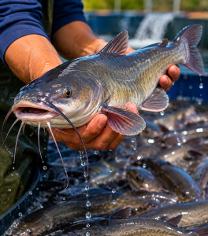
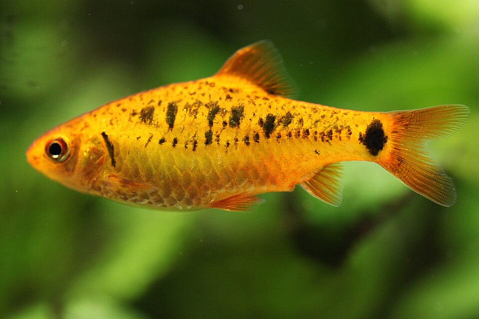
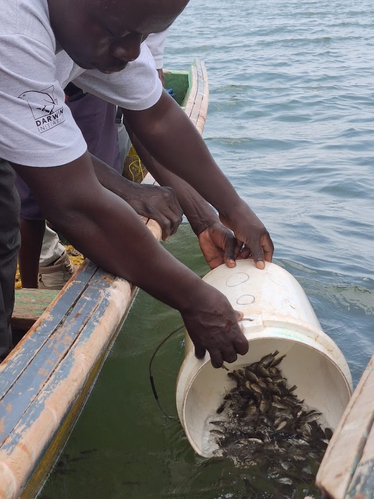
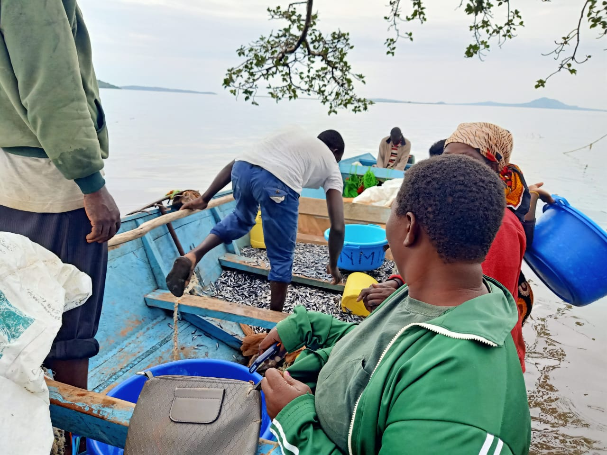
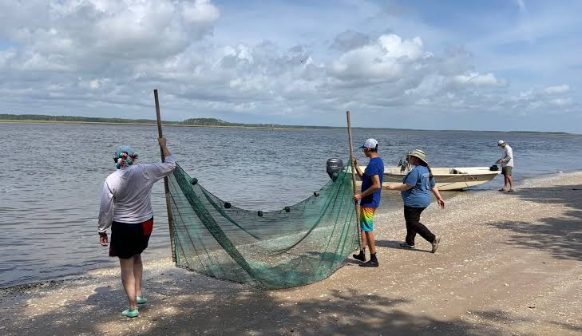

Home
Community Fish Reserves Network (CoFiRe Network)
CoFiRe Network advances Community Fish Reserves (CoFiRes) as a scalable area-based conservation model for securing freshwater ecosystems, biodiversity and fisheries. A nature-based solution for climate change adaptation, mitigation, native fish species restocking, securing livelihoods, and reduction of gender-based violence in fisherfolk communities.
Progress highlights
15
Community Fish Reserves already established with strong scalability potential.
- 105,000+ native fish species restocked.
- 3 years in operation with measurable outcomes.
- OECMs advancement linked to global biodiversity targets.
About Us
Indigenous and local fisherfolk-led network organisation.
CoFiRe Network is a network organisation of associations constituted by indigenous and local fisherfolk communities advancing area-based conservation of freshwater ecosystems, biodiversity and fisheries through recognition or establishment of Community Fish Reserves.
CoFiRe Network aligns local stewardship, conservation planning, and fishery co-management to protect freshwater ecosystems while strengthening social and economic resilience in fisherfolk communities.
The network model supports recognition, establishment, and long-term management of Community Fish Reserves with room for replication and scaling in Kenya, Lake Victoria Region and Africa Great Lakes Region.
CoFiRe Model
CoFiRe Model at a glance.
A concise 3-part view of the challenge, the approach, and the results.
Challenge
Problem Statement
Freshwater ecosystem degradation, biodiversity loss, declining fisheries, livelihood pressure, and related social risks in fisherfolk communities.
Response
Solution Statement
- Establish and co-manage Community Fish Reserves with riparian, breeding, and regulated fishing zones.
- Build community capacity for monitoring, protection, and sustainable fisheries governance.
- Scale through legal recognition, OECM alignment, and network expansion.
Impact
Achievements
- 15 Community Fish Reserves established in 3 years.
- Over 105,000 native fish species restocked.
- Improved fishing practices, habitat condition, and local stewardship.
See the complete problem statement, solution architecture, and full achievement details.
CoFiRe Network
Community Fish Reserves across Homabay, Kisumu, Busia, and Siaya.
The following Community Fish Reserves constitute the CoFiRe Network. Recruitment of more CoFiRes is ongoing for impact at scale.